Nội dung bài học
- Các khái niệm cơ bản trong ngôn ngữ JavaScript hiện đại
- Các khái niệm và thao tác cơ bản trong Node.js
- Các khái niệm và thao tác cơ bản MongoDB
- Một số khái niệm cơ bản
- Kết nối và tạo cơ sở dữ liệu (Connect, Create Database)
- Tạo một bộ sưu tập (Create Collection)
- Xóa một bộ sưu tập (Drop Collection)
- Chèn tài liệu (Insert document)
- Hiển thị tài liệu (Find document)
- Lọc tài liệu (Filter document)
- Xóa tài liệu (Delete document)
- Cập nhật tài liệu (Update document)
- Sắp xếp các tài liệu (Sort document)
- Kết nối các tài liệu (Join document)
- Bài tập NodeJS và MongoDB
ES5 là đặc tả ngôn ngữ JavaScript được sử dụng phổ biến nhất hiện nay. Cơ bản về JavaScript từ ES5 trở về trước có thể tham khảo tại JavaScript cơ bản. Tuy nhiên, nhiều đặc trưng mới được giới thiệu trong các đặc tả ES6, ES7, v.v. Hiểu về các đặc trưng mới trong JavaScript sẽ giúp chúng ta sử dụng các framework như React, Angular, React Native, Node, v.v. một cách hiệu quả.
Chi tiết về các khái niệm có thể tham khảo tại Các khái niệm cơ bản trong JS hiện đại.
Trước ES6, lập trình hướng đối tượng trong JS gây rất nhiều khó khăn cho những người đã quên thuộc với các ngôn ngữ như Java, C# hay Python. ES6 đã giới thiệu tiêu chuẩn lập trình hướng đối tượng mới giúp chúng ta tiếp cận một cách tự nhiên hơn mà vẫn giữ được những điểu mạnh của JS trước đó. Một số khái niệm cơ bản trong lập trình hướng đối tượng JS hiện đại:
Chi tiết về các khái niệm có thể tham khảo tại Các khái niệm cơ bản trong JS hiện đại.
Các nhà phát triển cung cấp nhiều API Web giúp việc truy cập hay nạp dữ liệu từ các nguồn trên Internet hiệu quả hơn nhờ cơ chế làm việc không đồng bộ. Có 3 kỹ thuật không đồng bộ trong JS:
Chi tiết về các khái niệm có thể tham khảo tại Các khái niệm cơ bản trong JS hiện đại.
Một vài khái niệm làm quen với NodeJS đã được trình bày trong Bài 1. Trong mục này, chúng ta sẽ tìm hiểu về Mô đun (Module) - khái niệm cốt lõi trong NodeJS.
Một mô đun trong Node.js có thể được xem như một thư viện chứa các hàm JavaScript. Muốn sử dụng hàm nào, chúng ta phải biết hàm đó thuộc mô đun nào để yêu cầu Node truy cập mô đun đó trước khi sử dụng. Node.js cung cấp hai kiểu mô đun:
Để truy cập mô đun (cả hai kiểu) chúng ta dùng hàm require. Xét các ví dụ về 2 kiểu mô đun.
Ví dụ trong đoạn mã từ tập tin myFirstNode.js:
Chúng ta dùng hàm require để truy cập mô đun tạo sẵn là http trước khi sử dụng hàm createServer. Chúng ta sẽ gặp lại mô đun này trong phần kế tiếp.
Trong Node.js, mô đun là một tập tin js chứa các hàm và thuộc tính. Chúng ta sẽ tạo một mô đun tên myModuleNode.js trong thư mục MyNodeJS có nội dung sau:
Từ khóa exports cho phép các thành phần trong mô đun có thể được sử dụng bên ngoài mô đun. Truy cập mô đun myModuleNode.js từ tập tin myUserModule.js:
./ nghĩa là tập tin mô đun và tập tin Node.js chứa trong cùng thư mục. Từ cửa sổ Terminal, gõ lệnh:
D:\MyNodeJS> node myUserModule.js
Enter và truy cập http://localhost:8080
Các thao tác cơ bản trong NodeJS được sử dụng thông qua các mô đun tạo sẵn phổ biến sẽ được trình bày sau đây.
Node.js có một mô đun tích hợp sẵn có tên HTTP, cho phép Node.js truyền dữ liệu qua Giao thức truyền siêu văn bản (HTTP - Hyper Text Transfer Protocol). Để truy cập mô-đun HTTP, chúng ta dùng phương thức require như ví dụ tập tin myFirstNode.js:
Mô đun HTTP có thể tạo một máy chủ HTTP lắng nghe các cổng của máy chủ và gửi phản hồi lại cho máy khách. Sử dụng phương thức createServer để tạo một máy chủ HTTP như đoạn mã từ tập tin myFirstNode.js trên. Hàm được truyền vào phương thức http.createServer() sẽ được thực thi khi ai đó cố gắng truy cập vào máy tính trên cổng 8080.
Mô đun hệ thống tập tin Node.js là FS cho phép làm việc với hệ thống tập tin trên máy tính của chúng ta. Để truy cập mô đun FS chúng ta dùng hàm require tương tự khi dùng HTTP. Các thao tác chính có thể sử dụng từ mô đun FS bao gồm:
Chúng ta sẽ lần lượt xét từng chức năng trên.
Phương thức fs.readFile() được sử dụng để đọc các tập tin trên máy tính của chúng ta. Để minh họa chức năng đọc tập tin, chúng ta sẽ tạo một tập tin tên demofile1.html trong thư mục MyNodeJS có nội dung sau:
Kế tiếp, tạo tập tin Node.js tên demo_readfile.js cũng trong thư mục MyNodeJS có nội dung như sau:
Từ cửa sổ Terminal, gõ lệnh:
D:\MyNodeJS> node demo_readfile.js
Enter và truy cập http://localhost:8080
Mô đun FS có các phương thức để tạo tập tin mới:
Phương thức fs.appendFile() nối thêm nội dung đã chỉ định vào một tập tin. Nếu tập tin không tồn tại, tập tin sẽ được tạo. Để kiểm tra, tạo tập tin Node.js tên demo_appendfile.js cũng trong thư mục MyNodeJS có nội dung như sau:
Từ cửa sổ Terminal, gõ lệnh:
D:\MyNodeJS> node demo_appendfile.js
Enter và cửa sổ Terminal xuất hiện từ Save!. Truy cập http://localhost:8080 xem kết quả trên trình duyệt web.
Phương thức fs.open() lấy "cờ" làm đối số thứ hai, nếu cờ là "w" cho "viết", thì tập tin đã chỉ định sẽ được mở để ghi. Nếu tập tin không tồn tại, một tập tin trống sẽ được tạo. Để kiểm tra, tạo tập tin Node.js tên demo_openfile.js cũng trong thư mục MyNodeJS có nội dung như sau:
Từ cửa sổ Terminal, gõ lệnh:
D:\MyNodeJS> node demo_openfile.js
Enter và cửa sổ Terminal xuất hiện từ Save!. Vì mynewfile2.txt chưa được tạo trước đó nên fs.open() sẽ tạo một file mới, chưa có nội dung và sẵn sàng cho chúng ta thêm nội dung vào (cờ w). Tìm đến tập tin mynewfile2.txt và thêm nội dung:
Toi duoc tao tu fs.open.
Lưu nội dung. Truy cập http://localhost:8080 xem kết quả trên trình duyệt web.
Phương thức fs.writeFile() thay thế tập tin và nội dung đã chỉ định nếu nó tồn tại. Nếu tập tin không tồn tại, một tập tin mới chứa nội dung đã chỉ định sẽ được tạo. Để kiểm tra, tạo tập tin Node.js tên demo_writefile.js cũng trong thư mục MyNodeJS có nội dung như sau:
Từ cửa sổ Terminal, gõ lệnh:
D:\MyNodeJS> node demo_writefile.js
Enter và cửa sổ Terminal xuất hiện từ Save!. Truy cập http://localhost:8080 xem kết quả trên trình duyệt web.
Mô đun FS có các phương thức để cập nhật tập tin mới:
Phương thức fs.appendFile() nối thêm nội dung đã chỉ định vào cuối tập tin đã chỉ định. Để kiểm tra, tạo tập tin demo_appendUpdate.js trong thư mục MyNodeJS có nội dung sau:
Từ cửa sổ Terminal, gõ lệnh:
D:\MyNodeJS> node demo_appendUpdate.js
Enter và cửa sổ Terminal xuất hiện từ Updated!. Mở tập tin mynewfile1.txt sẽ có nội dung được cập nhật.
Phương thức fs.writeFile() thay thế tệp và nội dung đã chỉ định. Để kiểm tra, tạo tập tin demo_writeFileUpdate.js trong thư mục MyNodeJS có nội dung sau:
Từ cửa sổ Terminal, gõ lệnh:
D:\MyNodeJS> node demo_writeFileUpdate.js
Enter và cửa sổ Terminal xuất hiện từ Replaced!. Mở tập tin mynewfile3.txt sẽ có nội dung được cập nhật.
Để xóa một tập tin được chỉ định, chúng ta sử dụng phương thức fs.unlink() của mô đun FS. Để kiểm tra, tạo tập tin demo_deleteFile.js trong thư mục MyNodeJS có nội dung sau:
Từ cửa sổ Terminal, gõ lệnh:
D:\MyNodeJS> node demo_deleteFile.js
Enter và cửa sổ Terminal xuất hiện từ File deleted! và tập tin mynewfile2.txt đã bị xóa.
Để đổi tên tập tin được chỉ định, sử dụng phương thức fs.rename() của mô đun FS. Để kiểm tra, tạo tập tin demo_renameFile.js trong thư mục MyNodeJS có nội dung sau:
Từ cửa sổ Terminal, gõ lệnh:
D:\MyNodeJS> node demo_renameFile.js
Enter. Cửa sổ Terminal xuất hiện từ File Renamed! và tập tin mynewfile1.txt đã được đổi tên thành myrenamedfile.txt.
Mô đun URL chia địa chỉ web thành các phần có thể đọc được, phân tích địa chỉ bằng phương thức url.parse() và nó sẽ trả về một đối tượng URL với mỗi phần của địa chỉ là các thuộc tính. Tương tự các mô đun khác, để truy cập mô đun URL, chúng ta sử dụng phương thức require. Để kiểm tra, tạo tập tin demo_url01.js trong thư mục MyNodeJS có nội dung sau:
Từ cửa sổ Terminal, gõ lệnh:
D:\MyNodeJS> node demo_url01.js
Enter và cửa sổ Terminal xuất hiện:
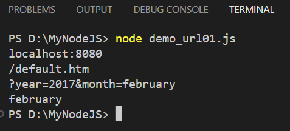Chúng ta đã biết cách phân tích cú pháp chuỗi truy vấn và trong phần trước chúng ta đã học cách làm cho Node.js hoạt động như một máy chủ tập tin. Bây giờ chúng ta kết hợp cả hai và phục vụ tập tin theo yêu cầu của máy khách.
Tạo tập tin summer.html trong thư mục MyNodeJS có nội dung sau:
Tạo tập tin winter.html trong thư mục MyNodeJS có nội dung sau:
Tạo tập tin demo_url02.js trong thư mục MyNodeJS mở tập tin được yêu cầu và trả lại nội dung cho máy khách:
Từ cửa sổ Terminal, gõ lệnh:
D:\MyNodeJS> node demo_url02.js
Enter. Truy cập http://localhost:8080/summer.html và http://localhost:8080/winter.html để xem kết quả trên trình duyệt.
Bên cạnh các thao tác tương ứng với các mô đun đã tìm hiểu ở trên, NodeJS còn hỗ trợ nhiều mô đun cho phép chúng ta tải tập tin lên (upload), gửi thư điện tử (send emails), xử lý sự kiện (events),... Chúng ta có thể tìm hiểu thêm về các thao tác này tại w3schools.com.
Chúng ta đã tìm hiểu một số nét cơ bản về MongoDB trong Bài 1, đã cài đặt và chạy thử trong Bài 2. Trong mục này, chúng ta sẽ tìm hiểu một số thao tác cơ bản trong MongoDB, nhưng trước tiên chúng ta sẽ xem lại một vài khái niệm cơ bản.
MongoDB là một hệ thống quản lý cơ sở dữ liệu phi cấu trúc (NoSQL) được phát triển để lưu trữ và truy vấn dữ liệu theo mô hình tài liệu. MongoDB sử dụng định dạng JSON (JavaScript Object Notation) để lưu trữ dữ liệu, giúp dễ dàng mở rộng và xử lý dữ liệu không cố định cấu trúc. Dưới đây là một số khái niệm cơ bản trong MongoDB:
MongoDB cung cấp một cách linh hoạt để lưu trữ và truy vấn dữ liệu, phù hợp cho các ứng dụng có tính mở rộng và yêu cầu dữ liệu không cố định cấu trúc.
Chúng ta sẽ truy cập cơ sở dữ liệu MongoDB dùng NodeJS. Để thực hiện điều này trong môi trường VS Code, chúng ta cần tạo một thư mục chứa cơ sở dữ liệu tên MGDB trong thư mục MyNodeJS chúng ta đã tạo trong phần Nodejs.
Trong VS Code mở Terminal và điều hướng đến thư mục MGDB.
Cài đặt MongoDB dùng npm: npm install mongodb
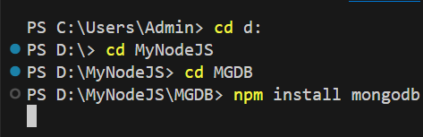Bây giờ chúng ta sẽ tạo cơ sở dữ liệu tên mydb bằng cách tạo tập tin tên demo_create.js trong thư mục MGDB có nội dung như sau:
Để tạo cơ sở dữ liệu trong MongoDB, chúng ta bắt đầu bằng cách tạo đối tượng MongoClient, sau đó chỉ định URL kết nối với địa chỉ IP chính xác và tên của cơ sở dữ liệu bạn muốn tạo (trong ví dụ trên là mydb). MongoDB sẽ tạo cơ sở dữ liệu nếu chưa tồn tại và tạo kết nối đến cơ sở dữ liệu này. Chúng ta sử dụng khai báo hàm async để thực hiện việc kết nối tới MongoDB, sử dụng await để chờ cho đến khi kết nối hoàn thành, và đóng kết nối ngay sau khi kết nối thành công.
Thực thi tập tin vừa tạo với NodeJS: node demo_create.js và kết quả:
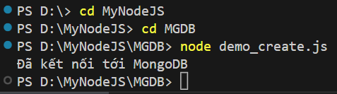Chúng ta đã có cơ sở dữ liệu (mydb), bây giờ chúng ta sẽ tạo một bộ sưu tập (collection) trong cơ sở dữ liệu này bằng cách tạo tập tin demo_collection.js trong thư mục MGDB có nội dung sau:
Để tạo một collection chúng ta dùng hàm createCollection(). Thực thi tập tin vừa tạo với NodeJS: node demo_collection.js và kết quả:
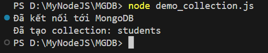Để xóa (drop) một bộ sưu tập (collection) trong cơ sở dữ liệu, chúng ta tạo tập tin demo_dropcollection.js trong thư mục MGDB có nội dung sau:
Xóa một collection chúng ta dùng hàm dropCollection(). Thực thi tập tin vừa tạo với NodeJS: node demo_dropcollection.js và kết quả:
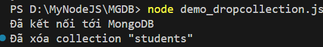Chúng ta đã có một (hay nhiều) collection (students) trong cơ sở dữ liệu (mydb). Kế tiếp, chúng ta sẽ chèn một tài liệu (document) đến collection vừa tạo. Một tài liệu tương đương một bản ghi (record) hay hàng (row) trong một bảng của cơ sở dữ liệu quan hệ.
Chúng ta tạo tập tin demo_insertOne.js trong thư mục MGDB có nội dung sau:
Trong ví dụ này, chúng ta sử dụng hàm insertOne để chèn một document mới vào collection. Đối số truyền vào là một object chứa thông tin của document mới. Thực thi tập tin vừa tạo với NodeJS: node demo_insertOne.js và kết quả:
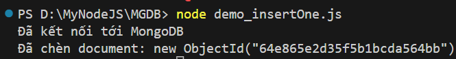Chúng ta cũng có thể chèn nhiều document đến collection cùng lúc bằng cách dùng hàm insertMany(). Tạo tập tin demo_insertMany.js có nội dung sau:
Trong ví dụ này, chúng ta sử dụng hàm insertMany để chèn một mảng các documents mới vào collection. Đối số truyền vào là một mảng chứa thông tin của các documents mới. Lưu ý rằng chúng ta cũng dùng hàm result.insertedCount trả về số lượng documents đã được chèn. Thực thi tập tin vừa tạo với NodeJS: node demo_insertMany.js và kết quả:
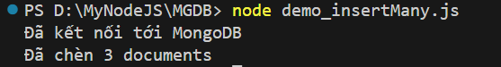Chú ý: Khi chèn một document vào collection sẽ có một trường ngầm định là _id quy định tính duy nhất của mỗi document trong collection. Trường _id chúng ta sẽ bắt gặp trong các phần kế tiếp.
Để hiển thị dữ liệu từ một hay nhiều bảng trong cơ sở dữ liệu quan hệ, chúng ta dùng câu lệnh SQL select. Trong mongodb, hàm find() có chức năng tương tự.
Tập tin demo_find.js trong thư mục MGDB dùng hàm find() hiển thị tất cả các document từ collection students có nội dung như sau:
Trong ví dụ này, chúng ta sử dụng hàm find để hiển thị các documents từ collection. Đối số truyền vào là một object mô tả điều kiện hiển thị, nếu rỗng nghĩa là hiển thị tất cả các documents (tương đương select * ). Trong trường hợp này, find trả về một cursor, một tập hợp các documents. Chúng ta có thể sử dụng phương thức forEach trên cursor để lặp qua từng document và thực hiện các thao tác mong muốn. Thực thi tập tin vừa tạo với NodeJS: node demo_find.js và kết quả:
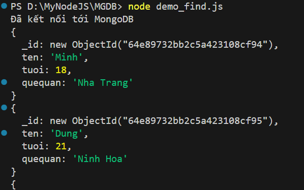Trường _id là trường ngầm định quy định tính duy nhất của mỗi document trong colection. Chúng ta có thể khởi tạo giá trị cho _id của mỗi document, nếu không, mongodb sẽ tự động phát sinh các giá trị cho trường _id của mỗi document như ví dụ trên.
Trong trường hợp collection chứa nhiều tài liệu (hàng nghìn, trăm nghìn,...), chúng ta có thể hạn chế số document hiển thị bằng hàm limit(num) với num là số document được phép hiển thị. Ví dụ:
const cursor = collection.find().limit(2); // Chỉ hiển thị 2 document
Một trường hợp khác, thay vì hiển thị tất cả các document trong collection chúng ta muốn chỉ hiển thị document đầu tiên bằng cách dùng hàm findOne(). Tạo tập tin demo_findOne.js có nội dung sau:
Thực thi tập tin vừa tạo với NodeJS: node demo_findOne.js và kết quả:
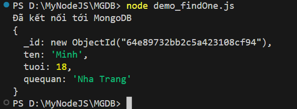Hàm find() hiển thị tất cả các document và mỗi document gồm các trường (fields) - là các cặp key : value như ten : 'Minh', tuoi : 18, quequan : 'Nha Trang'. Trong nhiều trường hợp chúng ta chỉ muốn hiển thị document với chỉ một vài trường được chọn, ví dụ chúng ta chỉ muốn hiển thị tất cả các document và mỗi document chỉ gồm các trường ten, tuoi, quequan và không hiển thị _id. Để thực hiện điều này, chúng ta dùng hàm project() với đối số chỉ định các trường được hiển thị (gán giá trị 1) và không được hiển thị (gán giá trị 0).
Minh họa cho trường hợp này, chúng ta tạo tập tin demo_findProject.js có nội dung sau:
Thực thi tập tin vừa tạo với NodeJS: node demo_findProject.js và kết quả:
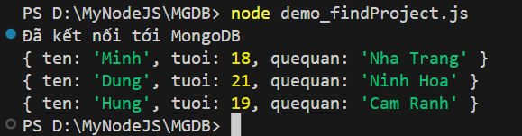Trong ví dụ này, chúng ta sử dụng phương thức project() để thiết lập đối số projection trong truy vấn find. Đối số projection được sử dụng để chỉ định các trường cần được lấy ra trong kết quả truy vấn.
Chú ý quan trọng: Ngoại trừ trường _id, chúng ta không được phép gán đồng thời giá trị 0 và 1 cùng một object hay document. Một trường (ngoại trừ _id) được gán 1 thì tất cả trường còn lại được gán là 0 và ngược lại.
Khởi tạo lại biến projection trong tập demo_findProject.js như sau:
const projection = { _id: 0, ten: 1 };
Kết quả:
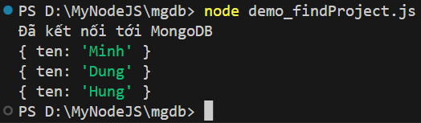Chúng ta có thể gán _id đến 0 hay 1 tùy nhu cầu:
const projection = { _id: 1, ten: 1 };
Kết quả:
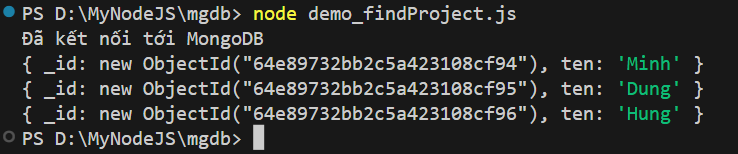Nếu chúng ta không viết _id có thể hiểu _id được gán đến 1.
const projection = { ten: 1 };
Kết quả:
Vì trường ten được gán đến 1 nên các trường còn lại (trừ _id) như tuoi và quequan được hiểu ngầm là gán đến 0. Tuy nhiên, chúng ta không được phép viết:
const projection = { ten: 1, tuoi: 0 };
Kết quả:
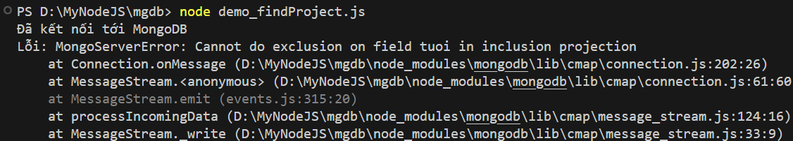Nhưng có thể viết:
const projection = { ten: 1, tuoi: 1 };
Kết quả:
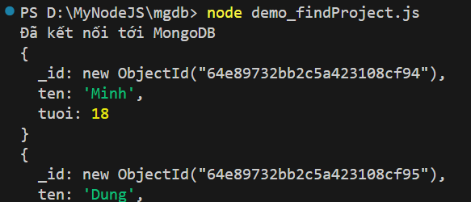Cuối cùng, nếu projection chỉ có duy nhất trường _id được gán đến 0, các trường còn lại có thể ngầm hiểu được gán đến 1:
const projection = { _id: 0 };
Kết quả:
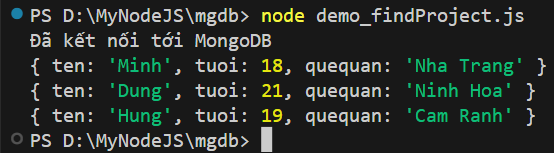Trong cơ sở dữ liệu quan hệ, để hiển thị thông tin các sinh viên có tuổi nhỏ hơn 21, chúng ta có thể dùng lệnh select kết hợp lệnh where. Trong mongodb, chúng ta dùng hàm find(query) với đối số query là một đối tượng chứa điều kiện. query có định dạng:
{
field1: value1,
field2: { operator: value },
...
}
Chúng ta có thể lọc các document dựa theo trường field1 với giá trị là value1 hay phức tạp hơn, ví dụ lọc danh sách sinh viên có tuổi nhỏ hơn 21, chúng ta dùng định dạng field2: { operator: value } với operator là các toán tử được quy định bởi mongodb. Có thể tìm hiểu chi tiết hơn về lọc và các toán tử.
Xét ví dụ lọc danh sách sinh viên có tuổi nhỏ hơn 21 bằng cách tạo tập tin demo_query.js có nội dung sau:
Kết quả:
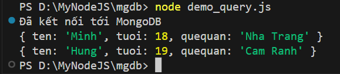Ví dụ trên chúng ta dùng định dạng cho query như sau:
{
tuoi: { $lt: 21 }
}
Toán tử lọc $lt được sử dụng trong so sánh nhỏ hơn. Tham khảo thêm các toán tử khác.
Bây giờ chúng ta muốn hiển thị các sinh viên có quê quán Nha trang. Thay đổi biến query từ tập tin demo_query.js như sau:
const query = { quequan: 'Nha Trang' };
Kết quả:
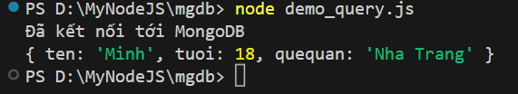Bây giờ chúng ta muốn hiển thị các sinh viên có quê quán Nha trang và tuổi lớn hơn 18. Thay đổi biến query từ tập tin demo_query.js như sau:
const query = { $and: [{ quequan: 'Nha Trang' }, { tuoi: { $gt: 18 } }]
};
Ở đây chúng ta dùng toán tử $and kết nối nhiều điều kiện thỏa mãn đồng thời và toán tử $gt so sánh lớn hơn.
Đối với các trường có giá trị là các chuỗi (strings), trong nhiều trường hợp chúng ta cần sử dụng biểu thức thường quy (regular expression) để so khớp giá trị. Ví dụ hiển thị danh sách sinh viên có quê quán bắt đầu bằng chữ 'N', biến query thay đổi như sau:
const query = { quequan: /^N/ };
Kết quả:
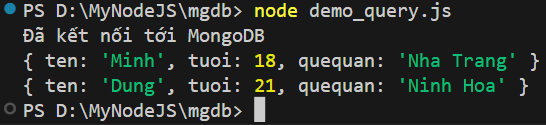Để xóa danh sách document theo điều kiện nào đó chúng ta dùng hàm deleteMany(query) với query là đối tượng chứa điều kiện (xem lại Lọc tài liệu (Filter document)). Nếu query = {} toàn bộ document trong collection sẽ bị xóa. Tạo tập tin demo_deleteAllDoc.js trong thư mục MGDB có nội dung:
Kết quả:
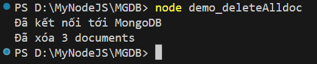Để xóa danh sách sinh viên có tuổi nhỏ hơn 21, chúng ta thay đổi hàm deleteMany() từ tập tin demo_deleteAllDoc.js như sau:
{
const query = { tuoi: { $lt: 21 } };
const result = await collection.deleteMany(query);
}
Kết quả:
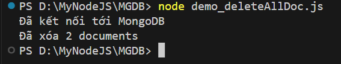Hàm deleteMany() xóa tất cả document thỏa điều kiện. MongoDB còn hỗ trợ hàm deleteOne() chỉ xóa document đầu tiên trong danh sách các document thỏa điều kiện.
Để cập nhật nội dung một hay nhiều document trong collection chúng ta dùng hàm updateOne(query, newValue) hay updateMany(query, newValue) với query là đối tượng chứa điều kiện lọc các tài liệu cần cập nhật (xem lại Lọc tài liệu (Filter document)) và newValue là giá trị cập nhật.
Trước khi minh họa, chúng ta hãy nhìn lại các document từ collection students đang có:
Giả sử chúng ta muốn thay đổi quê quán đến Ninh Hòa cho tất cả sinh viên có tuổi nhỏ hơn 21. Tạo tập tin demo_update.js có nội dung sau:
Vì cập nhật tất cả sinh viên có tuổi nhỏ hơn 21 nên chúng ta dùng hàm updateMany(). Kết quả:
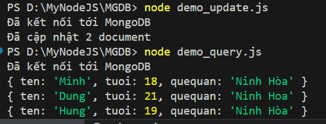Chúng ta dùng toán tử $set để gán giá trị cập nhật.
Khi hiển thị các document (hàm find) từ một collection, chúng ta có thể hiển thị theo thứ tự tăng hay giảm dần theo một trường nào đó. Tập tin demo_sort.js được tạo trong thư mục MGDB sắp xếp danh sách sinh viên tăng dần theo tuổi có nội dung sau:
Kết quả:
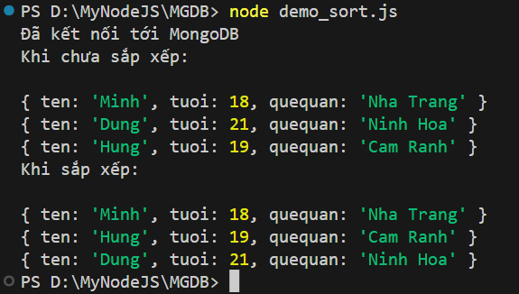Chúng ta sử dụng hàm sort(querysort) để sắp xếp các document theo trường nào đó dựa trên đối số querysort có định dạng sau:
const sortquery = { trường : 1 };-> Nếu sắp tăng dần theo trường
const sortquery = { trường : -1 };-> Nếu sắp giảm dần theo trường
Trong cơ sở dữ liệu quan hệ chúng ta có thể dùng lệnh join để kết nối các bảng có quan hệ với nhau và MongoDB cũng có thể thực hiện được điều tương tự với các collection của mình nhờ toán tử $lookup và hàm aggregate(). Để minh họa chúng ta sẽ tạo các collection Students và Departments như sau:
{ _id: "SV01", ten: 'Minh', tuoi: 18, quequan: 'Nha Trang', khoa_id: "KH01" },
{ _id: "SV02", ten: 'Dung', tuoi: 21, quequan: 'Ninh Hoa', khoa_id: "KH01" },
{ _id: "SV03", ten: 'Hung', tuoi: 19, quequan: 'Cam Ranh', khoa_id: "KH02" }
{ _id: "KH01", tenKH: 'Cơ Khí' },
{ _id: "KH02", tenKH: 'Công Nghệ' },
{ _id: "KH03", tenKH: 'Điện Tử' }
Bây giờ chúng ta sẽ thể hiện thông tin Departments cùng với thông tin Students tương ứng bằng cách tạo tập tin demo_join.js có nội dung như sau:
Kết quả:
[{"_id":"KH01","tenKH":"Cơ Khí","Các sinh viên:":[{"_id":"SV01","ten":"Minh","tuoi":18,"quequan":"Nha
Trang","khoa_id":"KH01"},{"_id":"SV02","ten":"Dung","tuoi":21,"quequan":"Ninh
Hoa","khoa_id":"KH01"}]},
{"_id":"KH02","tenKH":"Công Nghệ","Các sinh
viên:":[{"_id":"SV03","ten":"Hung","tuoi":19,"quequan":"Cam
Ranh","khoa_id":"KH02"}]},
{"_id":"KH03","tenKH":"Điện Tử","Các sinh viên:":[]}]